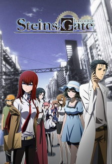
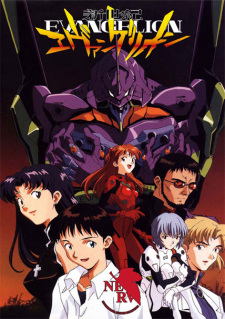
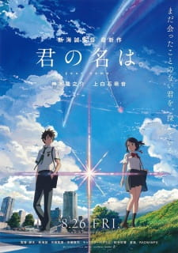
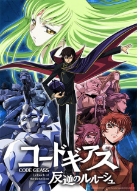
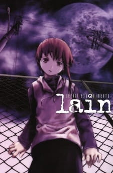

The Cosmic Lounge
A premium, interactive gallery of my personal watch history and favorite science-fiction cinema. Click or hover any poster card to flip it and view the physics break-down and ratings.

TVSteins;Gate
Steins;Gate
A self-proclaimed mad scientist and his lab members accidentally invent a microwave-based time travel device, triggering a desperate fight to change worldlines and escape a dystopian timeline.
Physics Review:
The gold standard of time-travel fiction. It handles causality loops, world-lines, and attractor fields with extreme logical consistency. Okabe's transition from chuunibyou delusions to genuine mental exhaustion from looping is tragic and incredibly written.
Interstellar
Interstellar
A team of astronauts travel through a wormhole in search of a new home for humanity, navigating extreme time dilation and gravitational waves near a supermassive black hole.
Physics Review:
Kip Thorne's general relativity modeling is flawless here. The visual rendering of the accretion disk around Gargantua and the gravitational time dilation on Miller's planet (1 hour = 7 years) are masterclasses in applying PCM equations to visual media.

TVNeon Genesis Evangelion
Evangelion
In a post-apocalyptic world, a teenager is pressured by his cold father to pilot a giant bio-mechanical construct to defend humanity from mysterious, alien entities known as Angels.
Physics Review:
Evangelion is a masterpiece of deconstruction. It wraps a mecha premise around intense psychological exploration of depression, ego borders (the Absolute Terror Field), and the human instrument project. The mechanical designs are unforgettable.
Tenet
Tenet
A secret agent is recruited to prevent an armageddon triggered by technology from the future that can invert the entropy of objects and people, causing them to move backward in time.
Physics Review:
Nolan's take on thermodynamic time arrows and CPT symmetry (Charge, Parity, Time inversion) is incredibly ambitious. The temporal pincer movements—where one team moves forward and the other backward through the same battle—are mind-bending to trace.

MovieYour Name
Your Name
Two high school students swap bodies periodically, leading to a desperate attempt to warn and save a town from an impending orbital comet impact.
Physics Review:
The comet orbital trajectories, body-swapping across a three-year temporal offset, and Shinkai's breathtaking celestial artwork make this a spectacular visual and emotional experience. Musubi (connections) is a beautiful metaphor for spacetime topology.
Coherence
Coherence
During a comet pass, a dinner party of friends experiences a local power outage, only to discover that the comet has created a quantum coherence event, splitting reality into multiple multiverses.
Physics Review:
A brilliant low-budget demonstration of Schrödinger's cat. It shows how macroscopic quantum decoherence would break down if parallel realities could interact within a localized zone. The tension rises as they realize they aren't in their original universe.

TVCode Geass
Code Geass
An exiled prince of an oppressive empire gains the power of absolute obedience and leads a masked rebellion to destroy his father's regime and construct a peaceful world for his sister.
Physics Review:
Lelouch is one of the greatest protagonists in fiction. The chess-like military tactics, geopolitical maneuvering, and the ultimate sacrificial play of the Zero Requiem make it an absolute masterclass in narrative tension and payoff.
Arrival
Arrival
A linguist is recruited by the military to translate the language of alien visitors, discovering that learning their non-linear writing system fundamentally alters her brain's perception of time.
Physics Review:
Fascinating exploration of the Sapir-Whorf hypothesis and Fermat's Principle of Least Time. If light travel path is calculated by knowing the destination beforehand, these aliens perceive time simultaneously. The non-linear circular orthography is beautiful.

TVSerial Experiments Lain
Serial Experiments Lain
An introverted girl becomes increasingly obsessed with 'The Wired' (a global digital communications network), leading to the blurring of the boundary between the real world and digital consciousness.
Physics Review:
Extremely ahead of its time (released in 1998). It predicts social media isolation, the collective digital consciousness, and questions what constitutes reality if our digital footprints exist independently of our physical shells.